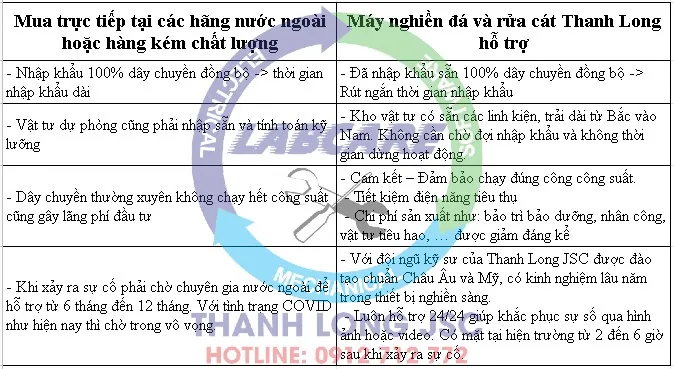
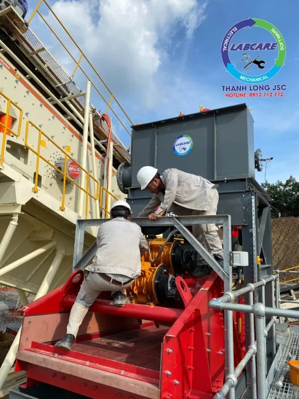
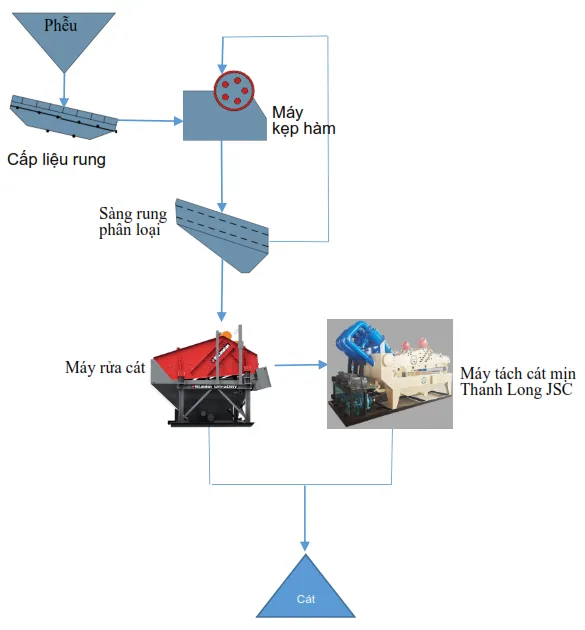
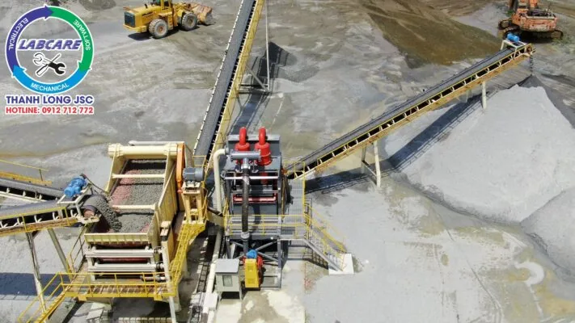
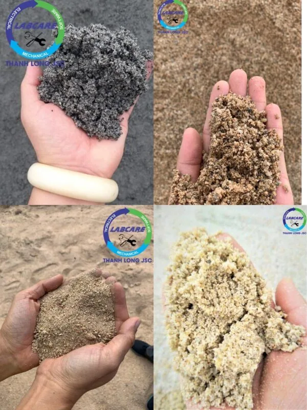

Việt Nam với trữ lượng đá rất lớn, được sử dụng trong nhiều loại vật liệu xây dựng (VLXD) rất hiệu quả. Phân bố khắp hai miền Bắc và Nam. Chính vì vậy, chúng ta không thể thiếu đá và cát nghiền từ đá để làm VLXD cơ bản. Thiết bị nghiền sàng được nhập khẩu vào Việt Nam từ rất sớm. Có lẽ ngay sau khi đất nước được giải phòng với sự đẩy mạnh của công cuộc đổi mới và xây dựng đất nước, hàng nhập khẩu ngày càng nhiều. Vì thế Hệ thống thiết bị sàng rửa cát sạch đạt tiêu chuẩn cát xây dựng, ngày càng được sử dụng rộng rãi tại các mỏ khoáng sản. Đầu tư và lựa chọn hệ thống thiết bị sàng rửa cát như thế nào để tiết kiệm chi phí đầu tư và thu về lợi nhuận cao nhất ?
Tầm nhìn công nghệ hạn hẹp tại Việt Nam
Một số lĩnh vực có các Viện nghiên cứu cơ khí và phát triển rất bài bản, ví dụ các ngành:. than, xi măng, … Còn về nghiền sàng đá làm VLXD, và rửa cát nghiền cho thấy có rất nhiều manh mún và chủ yếu là tự phát. Với quá nhiều nhà cung cấp trong nước, chào mời quảng cáo với các ông chủ mỏ với giá thành siêu rẻ. Không có kỹ sư chuyên ngành nghiên cứu chuyên sâu, hiểu biết và tư vấn cho khách hàng có nhiều hạn chế. Còn các chủ đầu tư chỉ quan tâm đến suất đầu tư, giá thành rẻ không thể có chất lượng tốt. Do đó hiệu quả sử dụng về sau là rất kém.
Thực trạng tại các mỏ khoáng sản Việt Nam
Gần đây, một số chủ mỏ đá có quy mô lớn ở Việt Nam đã nhận thấy và thay đổi thói quen. Đó là nhập khẩu dây chuyền nghiền sàng đá và rửa cát mịn tốt hàng đầu thế giới về để sử dụng như:. Superior, McLanahan và SRH, … Hoặc các công ty có kinh nghiệm lâu năm về thiết bị nghiền sàng đá. Là đại diện các hãng trên cung cấp các thiết bị trong và ngoài nước uy tín như:. Máy Nghiền Đá Thanh Long (Thanh Long JSC). Chất lượng sản phẩm và độ tin cậy của các thiết bị này đương nhiên là rất tốt. Nhiều dự án của Thanh Long JSC được trải dài từ Bắc tới Nam.
Cần nói thêm rằng, máy tốt và chạy hiệu quả dài lâu còn phụ thuộc phần lớn vào con người. Những đơn vị đầu tư dây chuyền tốt đó cần đào tạo đội ngũ kỹ sư, công nhân vận hành-bảo trì-bảo dưỡng tốt. Nhận chuyển giao đầy đủ công nghệ từ hãng hoặc từ công ty đại diện cung cấp.
Bước ngoặc lớn về tư duy từ Hệ thống thiết bị sàng rửa cát sạch
Một số chủ mỏ quyết tâm đầu tư hệ rửa cát tốt hàng đầu thế giới như:. McLanahan, Dernaseer, McCloskey, … Nhưng không nhờ sự hỗ trợ từ Thanh Long JSC thì lại gặp phải vấn đề nhược điểm như sau:

Theo nhiều kỹ sư chuyên gia, với các loại đá có độ cứng và gây mài mòn tấm lót cao như khu vực phía Nam (Bà Rịa – Vũng Tàu, Đồng Nai, Bình Thuận, …). thì sử dụng máy nghiền của của hãng nổi tiếng là đúng đắn như:. Superior, McLanahan và SRH, … Phía Bắc chủ yếu là đá Vôi, thì nên sử dụng của các công ty có kinh nghiệm lâu năm về thiết bị nghiền sàng đá. Hoặc Là đại diện các hãng trên cung cấp các thiết bị trong và ngoài nước uy tín như:. Máy Nghiền Đá Thanh Long. Thanh Long JSC là nhà cung cấp UY TÍN – CHẤT LƯỢNG trong nước đảm nhận, và cần đầu tư hệ thống tự động hóa để an toàn và hiệu quả.

Các thiết bị sàng rửa cát sạch tự chế kém chất lượng
Về cát xây dựng, hiện cát tự nhiên đang khan hiếm và bị cấm khai thác. Nhu cầu tiêu thụ cát lại gia tăng đột biến, giá thành cát cũng liên tục tăng cao. Nhiều chủ mỏ đã đầu tư hệ rửa cát, nhưng hầu hết là sản phẩm cát không đạt tiêu chuẩn TCVN 9205:2012. Tỷ lệ cát hạt mịn (0,14mm – 0,63mm) ra bùn thải nhiều, gây tổn thất lớn. Mà cát thành phẩm lại thiếu thành phần cỡ hạt này, ngoài ra cát thành phẩm lại chứa nhiều quá theo tiêu chuẩn lượng bùn và cát hạt mịn < 0.14mm.
Ưu điểm là đầu tư dây chuyền rất rẻ. Nhược điểm là hoạt động không hiệu quả, bùn thải lắm, chất lượng cát thành phẩm không đạt. Khó bán được hàng, chán nản và không mặn mà với đầu tư hệ rửa cát nghiền nữa. Nhược điểm lại nhiều hơn ưu điểm.
Hệ thống thiết bị sàng rửa cát sạch đạt chuẩn cát xây dựng từ Thanh Long JSC
Cát lấy từ mỏ về qua hệ thống sàng lọc, tách tạp chất. Cát sạch được lắng dưới đáy hầm thu. Cát sau khi xử lý qua hệ thống sàng rửa, tỷ lệ bụi cát còn lại nhỏ hơn 0,8%. Cát sau khi được làm sạch sẽ giúp nâng cao chất lượng của công trình, tiết kiệm chi phí đầu tư, tận dụng được nguồn cát nhiễm bẩn.
Sau đó sẽ qua máy tách cát mịn để thu về, thành phần hạt cát mịn (0.16-3mm) hiệu quả đến 85-90%. Phục hồi hoàn toàn tốt để giảm khối lượng công việc của các ao lắng. Làm giảm chi phí làm sạch bể lắng, tiết kiệm cho chủ đầu tư, góp phần bảo vệ môi trường. Việc tận thu cát mịn mang về doanh thu lớn cho chủ đầu tư, sử dụng trang trải các chi phí sản xuất khác.
Hệ thống thiết bị sàng rửa cát sạch từ đá 0x4mm
Thực tế sơ đồ và hệ thống thiết bị sàng rửa cát sạch đạt chuẩn cát xây dựng

Đá thô được nghiền ra kích thước nhỏ thông qua dây chuyền nghiền đá của Thanh Long JSC lắp đặt, với công suất 350 tấn/giờ. Được lọc bỏ tạp chất qua hệ thống sàng rung phân loại có hệ thống phun nước với áp lực lớn. Cát sau khi xử lý qua hệ thống sàng rửa, tỷ lệ bụi cát còn lại nhỏ hơn 0,8%. Trong quá trình lọc, lượng nước thải có mang theo cát nhỏ, bụi sẽ theo dòng nước vào máy tách cát mịn để thu về thành phần hạt cát mịn (0.16-3mm) hiệu quả đến 85-90%. Còn nước sạch được tận dụng lại để xịt rửa, phun lên các máy nghiền hàm, nghiền côn, băng tải và sàng phân loại, …

Sau đó được đưa qua máy tách cát mịn để xử lý hạt cát mịn
Hệ thống thường được đặt ở cuối dây chuyền nghiền cát nhân tạo mang lại gì cho chủ đầu tư
- Tiết kiệm chi phí sản xuất: Đầu tư máy móc ban đầu nhưng quá trình vận hành cần ít công nhân, cần ít diện tích lắp đặt dây chuyền. Không tốn chi phí xử lý sau quá trình tách bụi là các yếu tố để đánh giá chi phí sản xuất.
- Tận thu tối đa lượng hạt, bụi kích thước nhỏ phát sinh ra trong quá trình nghiền: Đây là một yếu tố khá khó khăn khi sử dụng các công nghệ rửa. Vì bụi đã hòa vào nước rất khó để xử lý, tách bụi ra bụi nước với nước. Nhưng công nghệ tách bụi khô thì làm được điều đó.
- Dễ dàng vận hành, lắp đặt: Đây chuyền đồng bộ hiện đại nhưng vẫn phải vận hành một cách dễ dàng nếu không sẽ làm giảm tính hiệu quả do vận hành thiết bị không đúng gây hỏng hóc.

Hãy liên hệ với chúng tôi, tư vấn và báo giá miễn phí: 0912.712.772
Thanh Long JSC chuyên cung cấp :
- Trạm nghiền cát/đá: Máy kẹp hàm, máy nghiền côn, sàng rung phân loại, máy nghiền cát, trạm nghiền đá di động, …
- Công nghệ rửa/tách: Máy rửa cát theo module, sàng rung tách nước, máy tách cát mịn, máy thu hồi cát mịn,..
- Thiết bị phụ tùng, vật tư: Dao nghiền, lưới sàng, má kẹp, nón côn,...
Kênh video Youtube: Thế giới máy nghiền đá Thanh Long JSC
Website: https://thegioimaynghienda.com
#bn